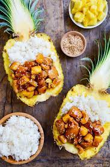

|

|
- 1/2 cup pineapple juice
- 1/3 cup low sodium soy sauce
- 1/3 cup low sodium chicken stock
- 1/3 cup hoisin sauce
- 1/2 cup brown sugar
- 1 Tablespoon minced fresh garlic
- 2 teaspoons cornstarch
- 1 Tablespoon olive oil
- 8 boneless, skinless chicken thighs cut into 1-inch cubes
- 1 cup diced pineapple
|